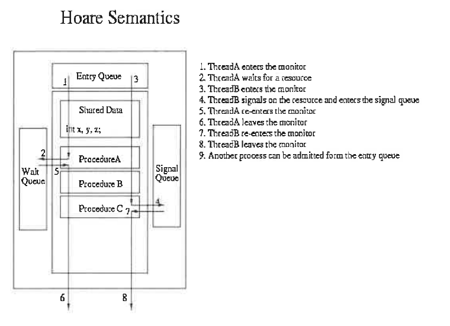

The 2022 paper only, in order. Each entry gives the year, the full question as printed, then a model answer sized to fit the space on the exam paper (prose kept to about 250 words; code, tables and diagrams added where the question needs them). Repeated questions use the same answer every time.
| Year | Paper | Questions |
|---|---|---|
| 2022 | CS5730 Operating Systems Midterm (2022/11/22) | 11 answers |
Disabling interrupts works on a uniprocessor only for trusted kernel code. It is the wrong tool for user-level synchronization because:
(It also does not scale: on a multiprocessor it only stops the local CPU.) User programs should instead use OS-provided semaphores/mutexes or atomic hardware instructions such as test_and_set or swap.
A associated with the condition variable q is resumed when B invokes q.signal(). We discussed two possibile solutions in class. One is signal and wait, and the flow is illustrated in the following (Hoare semantics). Please modify the Hoare semantics and depict the other solution (i.e., signal and continue).
Signal-and-continue: when B executes q.signal(), B keeps running in the monitor. The waiting process A is only moved from q's wait queue to a ready/re-entry queue (the "signal queue" now holds the signaled process). A resumes after B leaves the monitor or waits.
Compared with Hoare: in Hoare's version A runs immediately and the signaler B waits in the signal queue. In signal-and-continue, A may find the condition changed by the time it runs, so waiters should re-check it with while (!cond) q.wait();. There are fewer context switches, and this is what Java and Pthreads use.
Variables
semaphore mutex; // (initially = 1)
semaphore next; // (initially = 0)
int next-count = 0;
Each procedure F will be replaced by
wait(mutex);
...
// body of F;
...
if (next_count > 0)
signal(next)
else
signal(mutex);
For each condition variable x,
semaphore x_sem; // (initially = 0)
int x-count = 0;
The operation x.wait can be implemented as:
x-count++;
if (next_count > 0)
signal(next);
else
signal(mutex);
wait(x_sem);
x-count--;
The operation x.signal can be implemented as:
if (x-count > 0) {
next_count++;
signal(x_sem);
wait(next);
next_count--;
}Please modify the above code to implement signal and continue.In signal-and-wait the signaler blocks on next. For signal-and-continue, the signaler must not block. Instead, the signaled process waits on next to re-enter after the signaler leaves. Changed lines are marked NEW:
Variables
semaphore mutex; // (initially = 1)
semaphore next; // (initially = 0) signaled procs waiting to re-enter
int next_count = 0; // number of such procs
Each procedure F (unchanged)
wait(mutex);
...
// body of F;
...
if (next_count > 0)
signal(next); // hand monitor to a signaled process first
else
signal(mutex);
For each condition variable x (unchanged)
semaphore x_sem; // (initially = 0)
int x_count = 0;
x.wait
x_count++;
if (next_count > 0)
signal(next);
else
signal(mutex);
wait(x_sem); // sleep until signaled
wait(next); // NEW: wait until signaler leaves/waits
next_count--; // NEW: back inside the monitor
// (x_count-- moved into x.signal)
x.signal // signal-and-continue
if (x_count > 0) {
x_count--; // NEW: decremented by signaler
next_count++;
signal(x_sem); // wake one waiter ...
// REMOVED: wait(next); next_count--;
} // ... and the signaler simply continuesWhy: the signaler no longer suspends itself. The woken process must re-acquire the monitor, and it gets it through next, ahead of the entry queue, when the signaler exits or waits. x_count is decremented by the signaler, so two consecutive signals cannot wake the same single waiter twice. Callers should use while (!B) x.wait();.
Memory space per process: 48-bit addresses give 248 bytes = 256 TB of logical address space.
Page-table entries: 4 KB = 212 gives a 12-bit offset, so the page number is 48 − 12 = 36 bits. That makes 236 ≈ 68.7 billion (64 G) entries. On a 64-bit processor each entry is 8 bytes, so a single flat table would need 236 × 8 = 239 B = 512 GB per process.
How to store it: a flat table is far too large to keep, let alone contiguously. Page the page table with a multi-level (hierarchical) page table. x86-64 uses 4 levels:
| level 4: 9 bits | level 3: 9 bits | level 2: 9 bits | level 1: 9 bits | offset: 12 bits |
Each table at each level has 29 = 512 entries × 8 B = 4 KB, exactly one page, so tables are paged themselves. Only the tables for parts of the address space actually in use are allocated, which keeps the memory cost small. Alternatives: a hashed page table (good for sparse 64-bit spaces) or an inverted page table (one entry per physical frame). A TLB hides the extra memory accesses.
Two ways to schedule among the queues of a multilevel queue:
Turn it into a multilevel feedback queue: a process may move between queues according to its observed behaviour, so it reaches the right queue automatically after a few runs.
Defined by: number of queues, scheduling algorithm per queue, when to promote, when to demote, and which queue a new process enters.
Busy waiting (spinning) means a process waiting to enter its critical section stays in a loop that keeps testing a condition until it can enter, e.g. while (test_and_set(&lock)); or while (S <= 0);. It never gives up the CPU while waiting.
Degraded performance: the waiting process wastes CPU cycles doing no useful work, and other ready processes could have used them. On a single CPU, the spinner uses its entire time slice while the lock holder cannot run to release the lock, so everyone waits longer. If the spinner has higher priority than the lock holder, the holder may never run, and the system can even deadlock (priority inversion). Busy waiting is acceptable only for very short waits on multiprocessors, where it avoids a context switch.
block and wakeup? You need to write down the definition of data structure semaphore and wait and signal operations.Each semaphore has an integer value and a queue of waiting processes. Instead of spinning, a process that must wait is blocked (moved to the waiting state and placed on the semaphore's queue). signal wakes up one waiting process (moves it to the ready queue).
typedef struct {
int value;
struct process *list; /* queue of waiting PCBs */
} semaphore;
void wait(semaphore *S) {
S->value--;
if (S->value < 0) {
add this process to S->list;
block(); /* running -> waiting */
}
}
void signal(semaphore *S) {
S->value++;
if (S->value <= 0) {
remove a process P from S->list;
wakeup(P); /* waiting -> ready */
}
}If value is negative, |value| is the number of waiting processes. block() and wakeup() are system calls. wait() and signal() must still be atomic: disable interrupts inside them on a uniprocessor, or use a spinlock on a multiprocessor. That busy wait is limited to these few instructions, so it is short and rare.
BUFFER_SIZE-1 elements of buffer.Producer:
while (true) {
/* produce an item in next produced */
while (((in + 1) % BUFFER_SIZE) == out)
; /* do nothing */
buffer[in] = next_produced;
in = (in + 1) % BUFFER_SIZE;
}
Consumer:
while (true) {
while (in == out)
; /* do nothing */
next_consumed = buffer[out];
out = (out + 1) % BUFFER_SIZE;
/* consume the item in next consumed */
}The solution uses only in (next free slot) and out (next full slot) to describe the buffer state, and it defines empty as in == out (consumer waits).
If the producer were allowed to fill all BUFFER_SIZE slots, then after the last insert in would wrap around and also equal out. "Full" would look exactly like "empty", and the consumer could not tell them apart. To avoid this ambiguity, the producer treats the buffer as full when (in + 1) % BUFFER_SIZE == out, so one slot is always left unused.
Example with BUFFER_SIZE = 10: out = 0 and the producer has filled b0–b8, so in = 9. Now (9+1) % 10 = 0 = out, and the producer waits with only 9 items stored. b9 stays empty; filling it would make in = 0 = out, which means "empty".
To use all N slots, add a counter of items (which then needs synchronization because counter++/counter-- race) or a full/empty flag.
CPU utilization U = 25/50 + 30/75 = 0.50 + 0.40 = 0.90. The RMS guaranteed bound for N = 2 is 2(21/2 − 1) ≈ 0.83. Since U > 0.83, schedulability is not guaranteed, so draw the chart. RMS uses static priority by period: P1 (period 50) has higher priority than P2 (period 75).
No, P1 and P2 cannot be scheduled with RMS.
EDF assigns priority dynamically: the job with the earliest absolute deadline runs (on a tie, the running job continues). U = 0.90 ≤ 1, so EDF can schedule them.
All deadlines are met under EDF.